HITIK KUMAR NAYAK
Junior Research Fellow | VLSI & ASIC Design Engineer
Working on MeitY Sponsored C2S Project Implantable Pacemaker Chip (iPACE-CHIP) at ABV-IIITM Gwalior.
Working on MeitY Sponsored C2S Project Implantable Pacemaker Chip (iPACE-CHIP) at ABV-IIITM Gwalior.
ASIC Tape-Out
Internships
Research Projects
Qualified
I am an Electronics and Communication Engineering graduate with expertise in Analog IC Design, ASIC Design Flow, Cadence Virtuoso, Calibre Verification, MATLAB, Python, HTML, CSS and JavaScript.
Currently working as a Junior Research Fellow (JRF) at ABV-IIITM Gwalior under the MeitY sponsored Chips to Startup (C2S) Programme, contributing to the development of an Implantable Pacemaker Chip (iPACE-CHIP).
My research focuses on custom analog integrated circuits, transistor-level design, physical layout implementation, parasitic-aware verification, and fabrication-ready ASIC development using SCL 180nm technology.
Download CVFull Custom Analog IC Design using Cadence Virtuoso
MeitY Sponsored C2S Project Implantable Pacemaker Chip
DRC LVS PEX Sign-Off using Calibre
B.Tech Electronics & Communication Engineering
Guru Ghasidas Vishwavidyalaya (GGU), Bilaspur, Chhattisgarh
CGPA : 7.62 / 10.0
Duration: 2021 – 2025
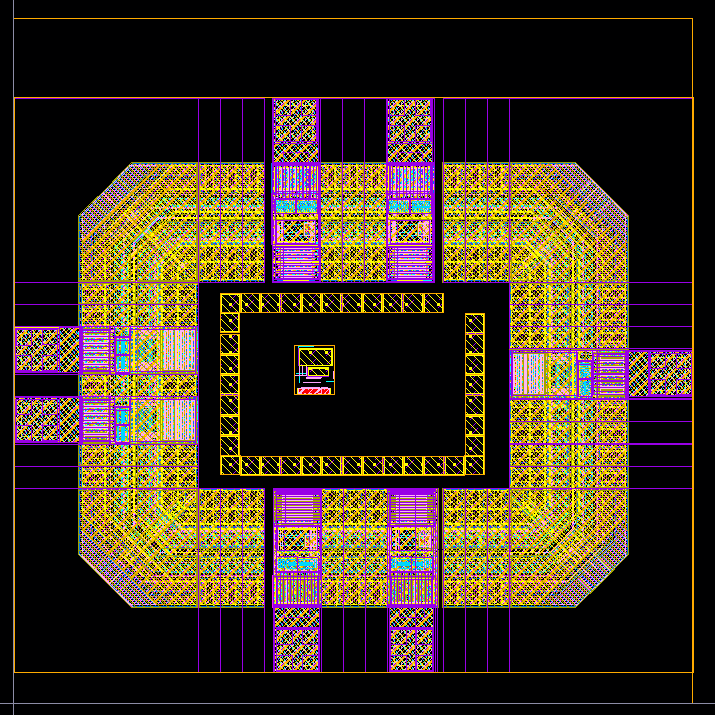


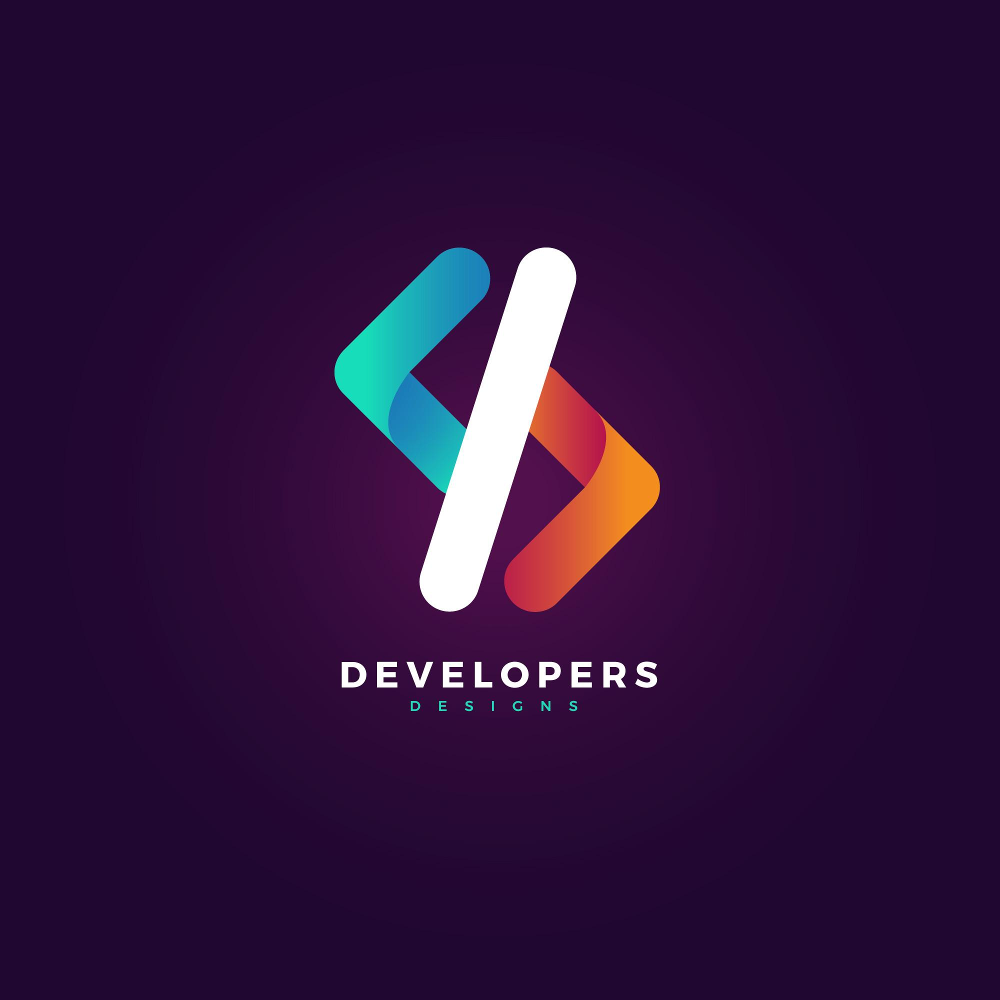
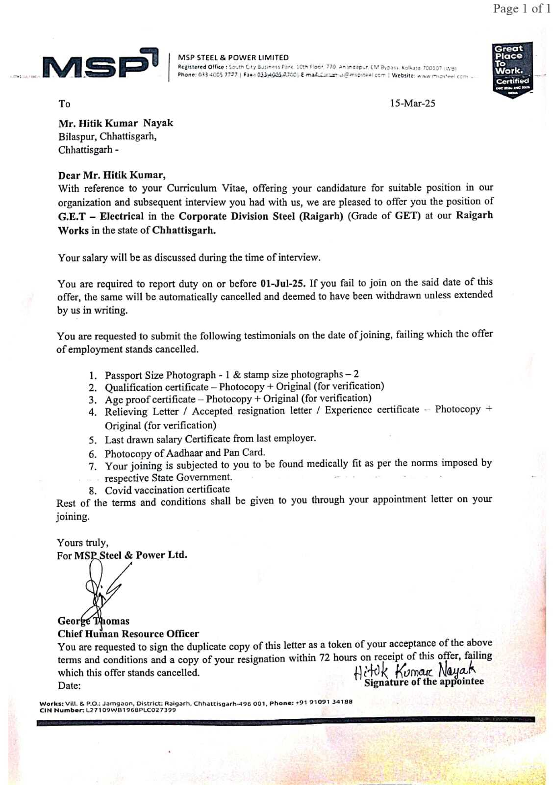
Jun 2025 - Jul 2025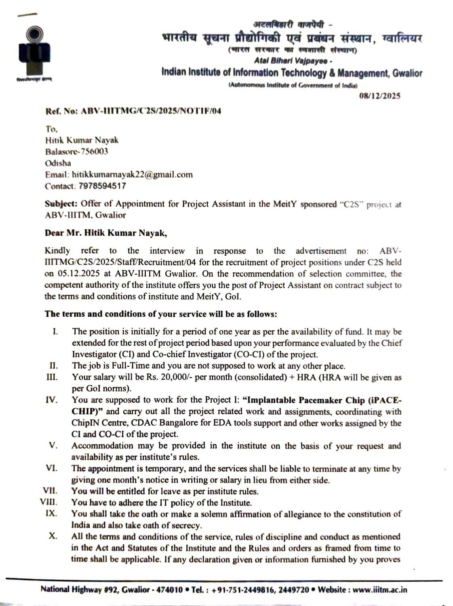
Aug 2025 - Dec 2025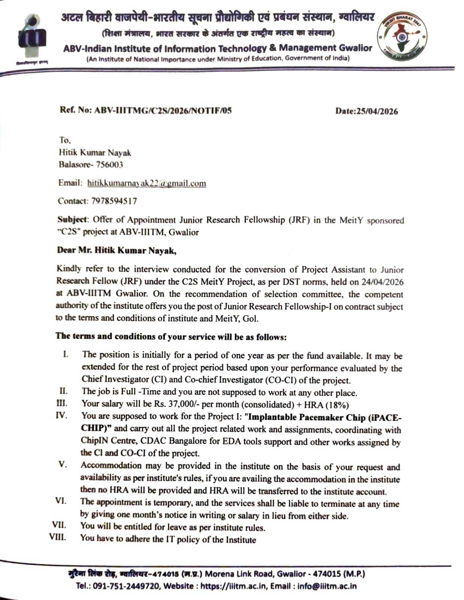
Dec 2025 - PresentImplantable Pacemaker Chip (iPACE-CHIP)
ASIC Tape-Out
Semiconductor Projects
Internships
DRC LVS Clean
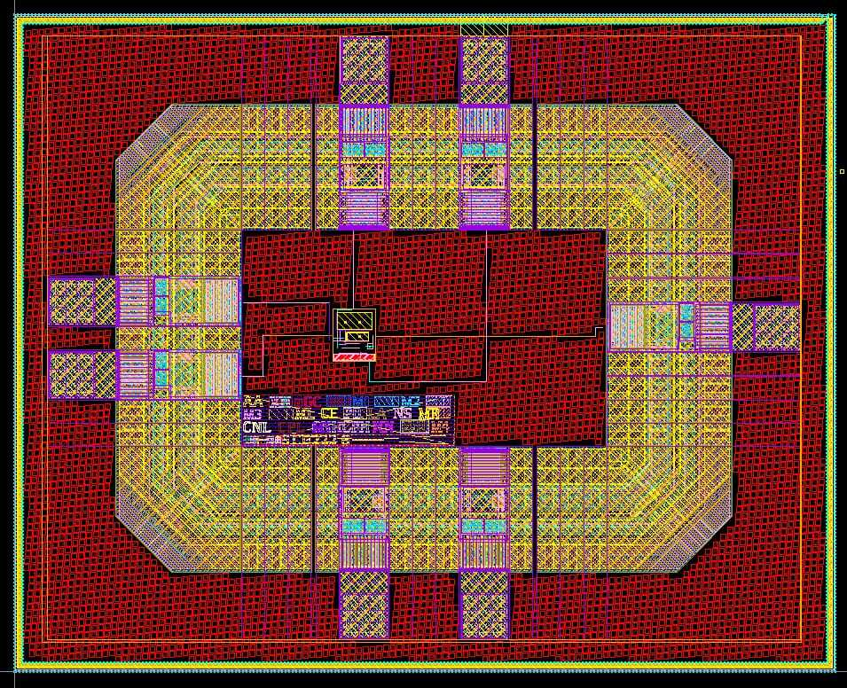


Designed and implemented a complete Two-Stage CMOS Operational Amplifier using Cadence Virtuoso in SCL 180nm technology. The project involved transistor sizing, analog simulation, custom layout design, physical verification and fabrication-ready GDSII generation.
Cadence Virtuoso Schematic Capture
Optimized W/L Ratios for Performance
AC DC Transient Analysis
Layout XL Custom Layout
100 Percent Rule Clean
Layout vs Schematic Matched
RC and Coupling Parasitics
Fabrication Ready Tape-Out
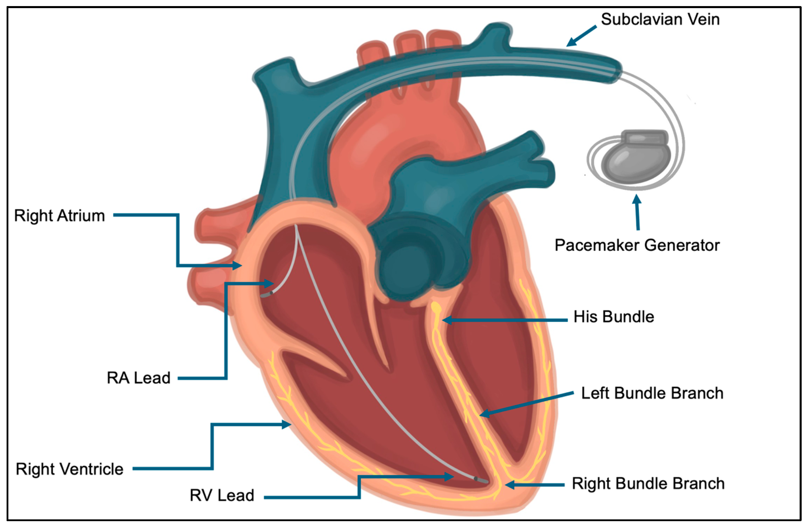
Research work under the MeitY C2S Programme focused on ultra-low-power analog and mixed-signal circuit design for biomedical implantable electronics.
Complete custom analog ASIC design flow including schematic capture, sizing, simulation, layout, DRC/LVS/PEX verification and GDSII generation.
MATLAB-based communication system modeling for channel capacity optimization over sub-THz frequency bands ranging from 50 GHz to 200 GHz.

MATLAB implementation and performance evaluation of Shannon-Fano Coding for efficient data compression and source coding analysis.
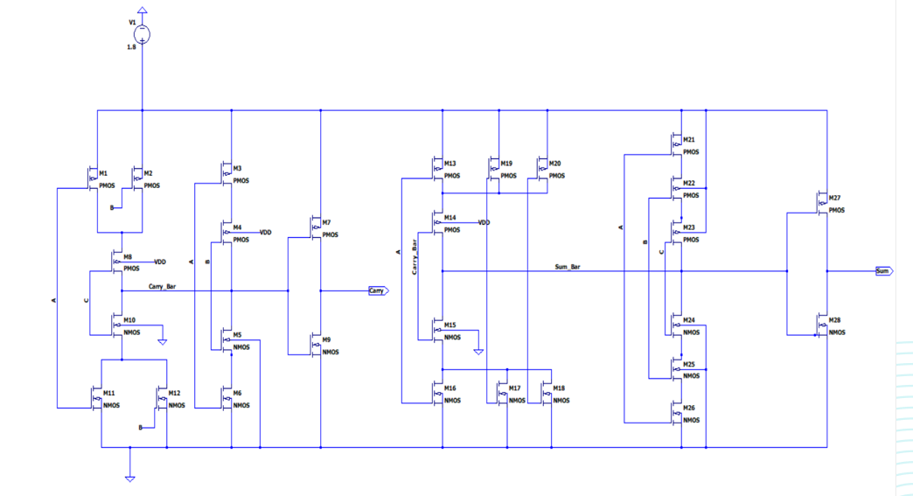
Designed and analyzed CMOS-based Hybrid Full Adder architectures using LTspice with emphasis on Power Delay Product and speed optimization.
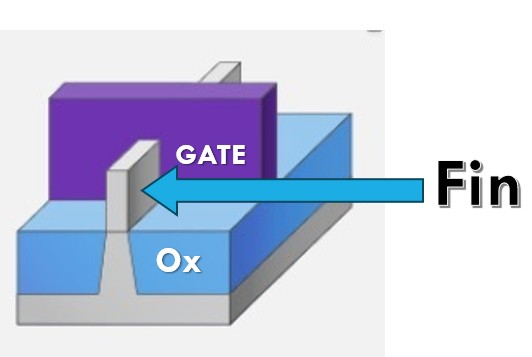
Simulation of advanced multi-gate FinFET devices to evaluate sub-threshold behavior, PDP and FO4 performance metrics.

Worked on Hybrid Full Adder design, CMOS inverter analysis and FinFET device simulations using LTspice.

Developed Python-based applications and explored data structures, algorithms and automation concepts.
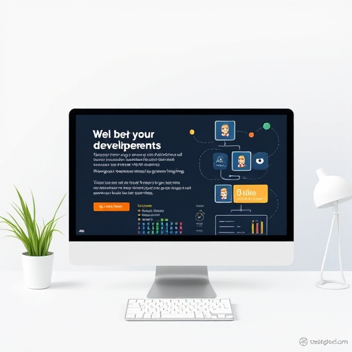
Designed responsive websites using HTML, CSS and JavaScript while following modern web standards.
Coordinated institutional outreach, student engagement activities and communication initiatives.
Professional Internships
HTML CSS JavaScript
Programming Internship
NIT Raipur Training

Electronics and Communication Engineering
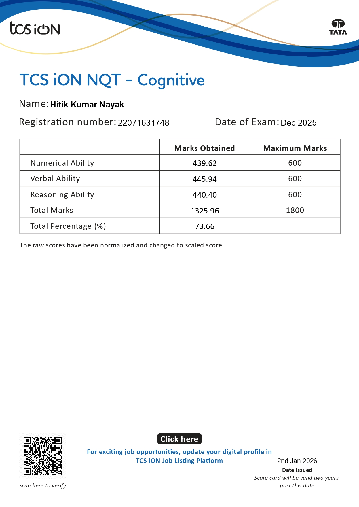
National Qualifier Test
Advanced Technical Documentation and Research Writing
Great Learning Academy
National Level Participant
Complete Custom Analog IC Design
GATE Score
TCS NQT Percentile
Internships
ASIC Tape-Out
Interested in VLSI Design, ASIC Development, Research Collaboration, PhD Opportunities, or Engineering Roles? Feel free to contact me.
Hitik Kumar Nayak
Balasore, Odisha, India
+91 7978594517
hitikkumarnayak22@gmail.com